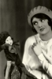
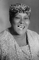

Country:United States, 62 minutes
Spoken languages:English
Genres:Horror
Director(s):Marshall Neilan
Writer(s):Marshall Neilan
Video Codec:Unknown
Number: 3030


Certification:
Storyline:
A black voodoo priestess comes out of the Louisiana swamps to take revenge on the white plantation owner she believes killed her husband. The old conjure woman Mandy returns with her daughter Chloe to their bayou home after fifteen years. Chloe was too young to remember much about the bayou, but once Mandy had been a famous voodoo priestess in these parts. But after the whites lynched her husband Sam, she took her little girl & moved away into the Everglades. She seems to have gone a little mad in the intervening years & has returned swearing a belated vengeance against the murdering white folks.
Cast:  
Medium: Original DVD,
Comments: Part of: Horror Classics - 100 Movie Pack
Loaned: No
Aspect ratio: Unknown